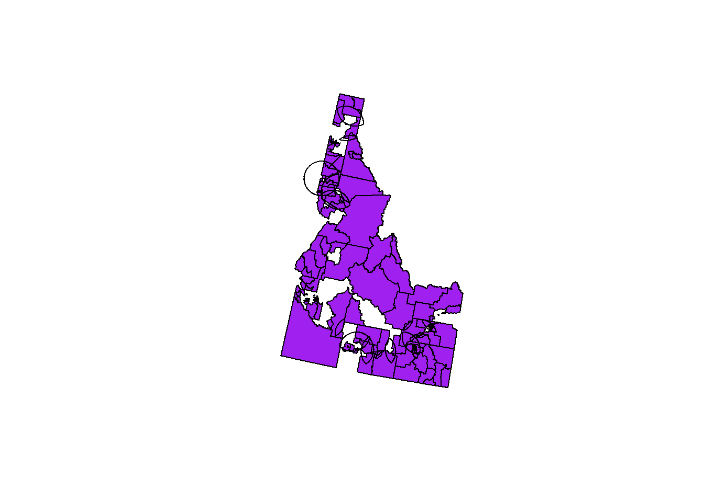
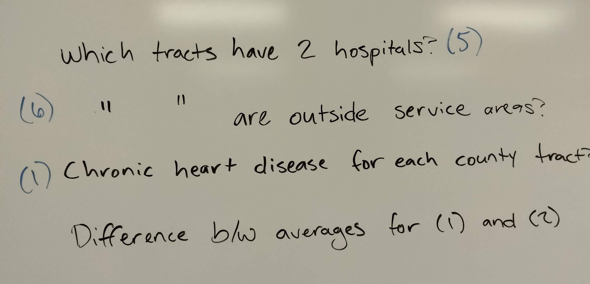
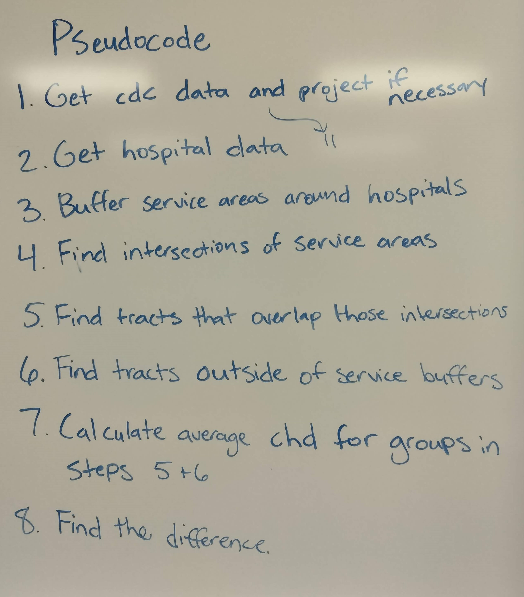
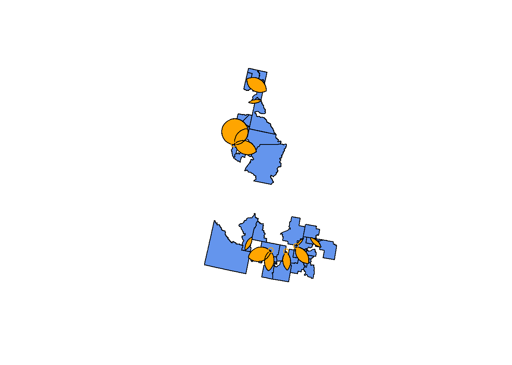
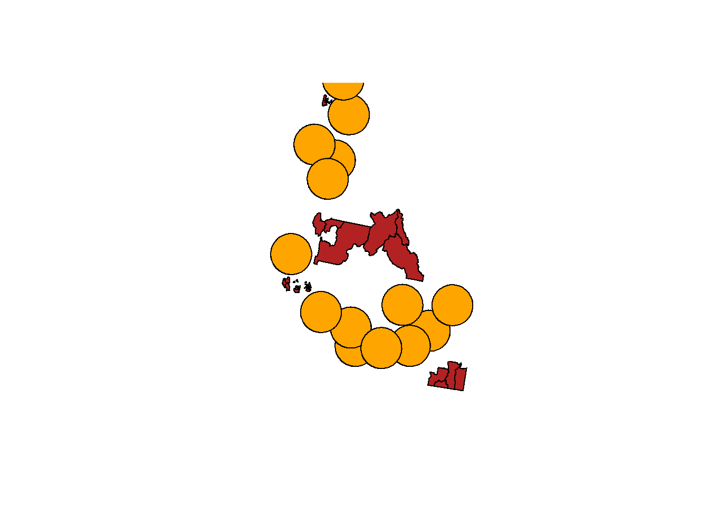

Code
cdc.idaho.proj <- st_transform(cdc.idaho, crs=st_crs(hospital.int.overlaps))
plot(st_geometry(cdc.idaho.proj), col="purple")
plot(st_geometry(hospital.int.overlaps), add=TRUE)
Carolyn Koehn
Code for questions 1 and 2 can be found in Session 11, in both the slides and the Panopto recording.


We did this in the previous questions – the dataset is cdc.idaho.
We did this in the previous questions – the dataset is hospital.sf.proj.
We did this in the previous questions – the dataset is hospital.buf.
We did this in the previous questions – the dataset is hospital.int.overlaps. However, we re-projected it, so now we need to project cdc.idaho to the same projection. A plot shows that they are aligned.
[,1] [,2] [,3] [,4] [,5]
[1,] FALSE FALSE FALSE FALSE FALSE
[2,] FALSE FALSE FALSE FALSE FALSE
[3,] FALSE FALSE FALSE FALSE FALSE
[4,] FALSE FALSE FALSE FALSE FALSE
[5,] FALSE FALSE TRUE FALSE FALSE
[6,] FALSE FALSE TRUE FALSE FALSE
[7,] FALSE FALSE TRUE FALSE FALSE
[8,] FALSE FALSE TRUE FALSE FALSE
[9,] FALSE FALSE TRUE FALSE FALSE
[10,] FALSE FALSE TRUE FALSE FALSE
[11,] FALSE FALSE TRUE FALSE FALSE
[12,] FALSE FALSE TRUE FALSE FALSEThis creates a logical matrix where each row corresponds to a tract, and the cells in the matrix show whether it overlaps with each overlap area (TRUE) or whether it does not (FALSE). The cool thing about logicals is that they also count as numbers (TRUE = 1, FALSE = 0). By finding the rowSums, we can see which tracts overlap with 2+ hospital areas (rowSum >= 1) and which don’t (rowSum = 0).

For an alternate tidyverse integration, see this Stack Overflow question.
We’ll use the same process as step 5, but this time we’ll keep the rowSums that are equal to 0.
[,1] [,2] [,3] [,4] [,5]
[1,] FALSE FALSE FALSE FALSE FALSE
[2,] FALSE FALSE FALSE FALSE FALSE
[3,] FALSE FALSE FALSE FALSE FALSE
[4,] FALSE FALSE FALSE FALSE FALSE
[5,] FALSE FALSE TRUE FALSE FALSE
[6,] FALSE FALSE TRUE FALSE FALSE
[7,] FALSE FALSE TRUE FALSE FALSE
[8,] FALSE FALSE TRUE FALSE FALSE
[9,] FALSE FALSE TRUE FALSE FALSE
[10,] FALSE FALSE TRUE FALSE FALSE
[11,] FALSE FALSE TRUE FALSE FALSE
[12,] FALSE FALSE TRUE FALSE FALSE
The rates of chronic heart disease are on average higher in tracts with multiple hospitals than those with no hospitals. Maybe there’s less access to a diagnosis, or heart disease is more fatal to people with less hospital access…?
---
title: "Session 11 Code"
author: "Carolyn Koehn"
format: html
---
```{r}
#| include: false
#| label: slidescode
library(tidyverse)
library(sf)
library(tmap)
hospital.sf <- read_csv("C:/Users/carolynkoehn/Documents/HES505_Fall_2024/data/2023/vectorexample/hospitals_pnw.csv") %>%
st_as_sf(., coords = c("longitude", "latitude"))
st_crs(hospital.sf)
cdc.sf <- read_sf("C:/Users/carolynkoehn/Documents/HES505_Fall_2024/data/2023/vectorexample/cdc_nw.shp")
st_crs(cdc.sf)$epsg
st_crs(hospital.sf) <- 4326
hospital.sf.proj <- hospital.sf %>%
st_transform(., crs=st_crs(cdc.sf))
st_crs(hospital.sf.proj) == st_crs(cdc.sf)
identical(st_crs(hospital.sf.proj), st_crs(cdc.sf))
cdc.idaho <- cdc.sf %>%
filter(STATEFP == "16")
nearest.hosp <- st_nearest_feature(cdc.idaho, hospital.sf.proj)
str(nearest.hosp)
nearest.hosp.sf <- hospital.sf.proj[nearest.hosp,]
hospital.dist <- st_distance(cdc.idaho, nearest.hosp.sf, by_element = TRUE)
str(hospital.dist)
cdc.idaho.hosp <- cdc.idaho %>%
mutate(., disthosp = hospital.dist)
cdc.furthest <- cdc.idaho.hosp %>%
slice_max(., n=10, order_by= disthosp)
head(cdc.furthest$disthosp)
hospital.sf <- read_csv("C:/Users/carolynkoehn/Documents/HES505_Fall_2024/data/2023/vectorexample/hospitals_pnw.csv") %>%
st_as_sf(., coords = c("longitude", "latitude"))
st_crs(hospital.sf) <- 4326
hospital.buf <- hospital.sf %>%
filter(STATEFP == "16") %>%
st_buffer(., dist = units::set_units(50, "kilometers"))
hospital.buf <- hospital.buf %>%
# project to planar CRS to get rid of warning
st_transform(., crs = 5070) %>%
# remove +/- duplicate buffer
filter(!row_number() %in% c(7,8))
hospital.int <- hospital.buf %>%
st_intersection(.)
all(st_is_valid(hospital.int))
hospital.int.overlaps <- hospital.int %>%
filter(n.overlaps > 1)
overlap.areas <- st_area(hospital.int.overlaps)
area_m2 <- sum(overlap.areas) + units::set_units(pi*50000^2, m^2)
units::set_units(area_m2, km^2)
```
Code for questions 1 and 2 can be found in [Session 11](https://isdrfall24.classes.spaseslab.com/content/11-content.html), in both the slides and the Panopto recording.
## Question 3
### What do we need to know?

### Pseudocode

### Step 1: Get cdc data and project if necessary
We did this in the previous questions -- the dataset is `cdc.idaho`.
### Step 2: Get hospital data and project if necessary
We did this in the previous questions -- the dataset is `hospital.sf.proj`.
### Step 3: Buffer service areas around hospitals
We did this in the previous questions -- the dataset is `hospital.buf`.
### Step 4: Find intersections of service areas
We did this in the previous questions -- the dataset is `hospital.int.overlaps`. However, we re-projected it, so now we need to project `cdc.idaho` to the same projection. A plot shows that they are aligned.
```{r}
cdc.idaho.proj <- st_transform(cdc.idaho, crs=st_crs(hospital.int.overlaps))
plot(st_geometry(cdc.idaho.proj), col="purple")
plot(st_geometry(hospital.int.overlaps), add=TRUE)
```
### Step 5: Find tracts that overlap those intersections
```{r}
overlap.tracts.matrix <- st_intersects(cdc.idaho.proj, hospital.int.overlaps, sparse = FALSE)
overlap.tracts.matrix[1:12, 1:5]
```
This creates a logical matrix where each row corresponds to a tract, and the cells in the matrix show whether it overlaps with each overlap area (`TRUE`) or whether it does not (`FALSE`). The cool thing about logicals is that they also count as numbers (`TRUE` = `1`, `FALSE` = `0`). By finding the `rowSums`, we can see which tracts overlap with 2+ hospital areas (rowSum >= 1) and which don't (rowSum = 0).
```{r}
overlap.tracts.filter <- rowSums(overlap.tracts.matrix)
overlap.tracts <- cdc.idaho.proj[overlap.tracts.filter>=1, ]
plot(st_geometry(overlap.tracts), col="cornflowerblue")
plot(st_geometry(hospital.int.overlaps), add=TRUE, col="orange")
```
For an alternate tidyverse integration, see [this Stack Overflow question](https://stackoverflow.com/questions/57014381/how-to-filter-an-r-simple-features-collection-using-sf-methods-like-st-intersect).
### Step 6: Find tracts outside of service buffers
We'll use the same process as step 5, but this time we'll keep the rowSums that are equal to 0.
```{r}
nohosp.tracts.matrix <- st_intersects(cdc.idaho.proj, hospital.buf, sparse = FALSE)
nohosp.tracts.matrix[1:12, 1:5]
nohosp.tracts.filter <- rowSums(nohosp.tracts.matrix)
nohosp.tracts <- cdc.idaho.proj[nohosp.tracts.filter==0, ]
plot(st_geometry(nohosp.tracts), col="firebrick")
plot(st_geometry(hospital.buf), add=TRUE, col="orange")
```
### Step 7: Calculate average chronic heart disease rate for both groups of tracts
```{r}
avg.nohosp.rate <- mean(nohosp.tracts$chd_crudep)
avg.overlaps.rate <- mean(overlap.tracts$chd_crudep)
```
### Step 8: Find the difference
```{r}
avg.overlaps.rate - avg.nohosp.rate
```
The rates of chronic heart disease are on average higher in tracts with multiple hospitals than those with no hospitals. Maybe there's less access to a diagnosis, or heart disease is more fatal to people with less hospital access...?